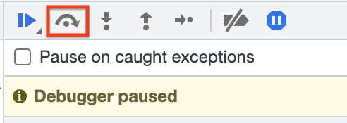

Open up the devtools to find the secret.
Mac: cmd-option-i
Windows/Linux: ctrl-alt-i
Then refresh the page.
If the debugger pauses without showing you the correct code, click the
first entry in the Call Stack to jump to where it's really paused. This
usually only happens the first time we pause on a given page.
For this page, use the "step over" button:
